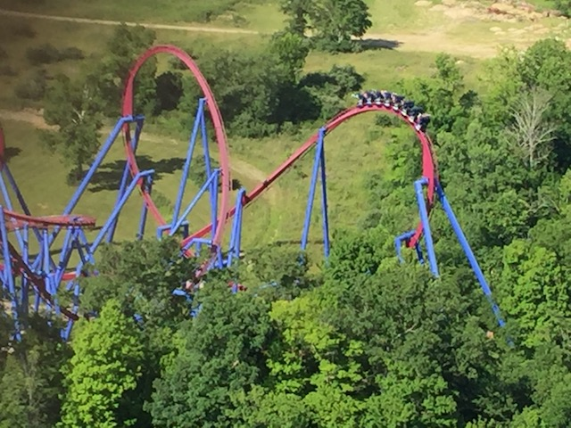
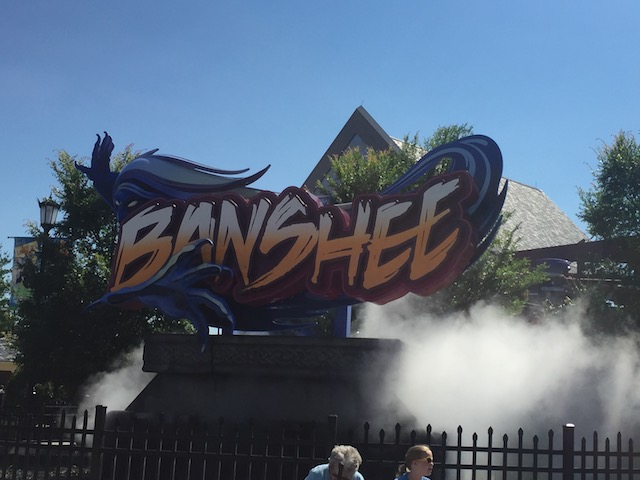

| |
Banshee Review
We're here at Kings Island to ride Banshee. This is the parks B&M Invert and what they chose to replace Son of Beast. Now naturally, since Son of Beast totally sucked, Banshee was a major improvement. However, Banshee has gotten a really good reputation in the coaster community. The newer B&Ms tend to be weaker and more mild than the rides that they used to make. They're not nearly as forceful. However, people have been raving about Banshee, claiming that this one is different. This is B&Ms return to their glory days. To the days of really forceful coasters. So I'm naturally curious and have to see if this is the case. So let's ride. We get in the cars, and pull down the restraints. Yeah, this ride has those vest restraints. I'm not sure why Cedar Fair is choosing to only have these restraints, but I don't really like it. Oh well. It's not a huge problem on Banshee. And we're off! We roll out of the station, go around a turn, and start climbing the lifthill. Now climbing up the lifthill, we actually notice something. This lifthill is threading a vertical loop. It's been a while since a B&M did that. I know a couple of old school B&Ms did this, but it really seemed to fall out of fashion. Happy to see this trend continue here. Maybe this is a sign that B&M is back to their old selves again. We eventually reach the top, enjoy the view of Kings Island, and then we drop. It's a really good first drop. A nice steep spiral first drop that really gives us some nice speed. Honestly, one of the better first drops on a B&M Invert. We then head up into an immelmann, twist up, and flip upsidedown, losing some speed, but gaining a little hangtime, before roaring back down to the ground, gaining our speed. We then head into the vertical loop. It's pretty good. Seriously, this thing has a couple Gs to this thing. You know, I'm starting to think that people were right and that Banshee is a return to the old school days of B&M. *Sigh* Then comes the Heartline Spin. We then head into that, and sadly, there is NO whip right here. The heartline spin is about on par with the ones on Silver Bullet and Talon. That's such a bummer. After a really good first drop, a solid immelman, and a forceful vertical loop, we then get a heartline spin like this. Come on B&M! I want a heartline spin with some bite to it! This ride is good, but it still doesn't fix your lack of forceful heartline spins. Up next, the Pretzal Knot. You thought these inversions were dead and only on Moonsault Scramble, which closed LONG ago (Bummer, it looked intersting). Nope, there's a couple that still exist. The Pretzal Knot here is fun, but nothing special. Sure, it does have some forces, and it is stronger than the one on Helix (Yes, I'm counting that as a Prtezal Knot). However, if you're expecting something along the lines of a Batwing, you're gonna be dissapointed. We then head into another vertical loop, except this one is smaller, making it more forceful. God damn! I should call this ride Microwave Burrito: The Ride. Because much like with a microwave burrito, you heat it up, it gets hot, but then you notice cold spots, it's the same basic thing here. It's hot, but with some cold spots. We then up a giant curved hill. It's fun, does a decent job of losing a lot of our speed. And then, this ride throws you a curveball and goes into an inline twist. And this thing is SLOW. You don't really expect something along the lines of the Jojo Roll from Hydra on this ride. I mean, maybe in the begenning, that makes sense. But a slow Jojo Roll in the middle of a ride that's had some forceful inversions and was going pretty fast. But unlike the heartline spin, I like this. Yeah, its slow, but this is good slow. The kind that gives a lot of hangtime. We then gain a little more speed goiung into a downward helix. Nothing crazy, but it's fun. Wee!!! Unfortunately, we go around one turn, and into the brakes. Aww. Lame =(. Yeah, a downside is that Banshee is unquestionably on the short side. But as far as the ride goes, I'd say it's a middle of the road B&M Invert. Not the best by any means, but certainly one of their better recent rides, and one of their stronger newer rides. Though to be fair, B&M can really make a kickass new coaster. They can do better than Banshee. But at the same time, this is better than the majority of their newer rides. I'll definetly say this. No other B&M Invert has a similar feel as Banshee. So while I may not like it as much as other enthusiasts, but it's definetly worth checking out at Kings Island.
8/10
Location: Kings Island
Opened: 2014
Built by: B&M
Last Ridden: June 28, 2018
Banshee Photos




Home
|